Tabelionato de Protestos de Ijuí — RS
Tradição e Segurança
desde 1912
Mais de um século a serviço da comunidade de Ijuí e região, com atendimento ágil, sigilo profissional e segurança jurídica em cada protesto e certidão emitida.
tradição
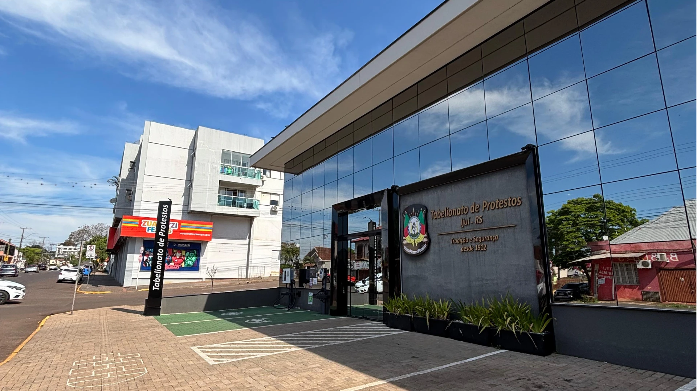
Institucional
Quem Somos
Há mais de um século, o Tabelionato de Protestos de Ijuí/RS atua na prestação de serviços de protesto de títulos e documentos de dívida, contribuindo para a segurança jurídica, a recuperação de crédito e um ambiente de negócios mais seguro e próspero. Instalado em prédio próprio de dois pavimentos e 285 m², conta com estacionamento exclusivo no centro da cidade e dois carregadores para veículos elétricos, disponibilizados gratuitamente aos clientes.
Seu memorial preserva a história da serventia, incluindo seu primeiro livro, de 1912, cuidadosamente restaurado. Aliando tradição e tecnologia, investe continuamente em sustentabilidade e melhoria dos processos, com geração de energia solar e reaproveitamento da água da chuva. Valoriza o atendimento humanizado e a integração com a comunidade, promovendo e apoiando iniciativas sociais, culturais e institucionais. A excelência e a experiência do usuário orientam sua atuação.
Missão & Visão
Missão
Contribuir para um ambiente de negócios seguro e próspero, promovendo segurança jurídica e equilíbrio entre credores e devedores, por meio de um atendimento humano, ágil e de excelência.
Visão
Ser referência no Rio Grande do Sul pela qualidade, inovação, segurança jurídica e experiência do usuário para um ambiente de negócios mais seguro e próspero.
Nossos Valores
Segurança Jurídica
Atuar com imparcialidade, confiança e conformidade legal.
Comprometimento
Dedicação aos resultados, ao trabalho em equipe e à excelência no atendimento.
Ética e Respeito às Pessoas
Agir com integridade, imparcialidade e respeito a usuários, colegas e parceiros.
Qualificação e Inovação
Buscar aprendizado contínuo, aperfeiçoamento e soluções inovadoras.
Sobre o Tabelião
Francisco Dalla Valle Von Kossel Tabelião de Protestos de Ijuí/RSFrancisco Dalla Valle Von Kossel é Tabelião de Protestos de Ijuí/RS, com trajetória profissional marcada pela atuação no serviço público, na atividade extrajudicial e na gestão. Foi Policial Rodoviário Federal por mais de 15 anos e, posteriormente, titularizou duas serventias extrajudiciais em Santa Catarina, antes de assumir o Tabelionato de Protestos de Ijuí.
Possui sete especializações, é autor de dois livros e tem atuação destacada no desenvolvimento e aprimoramento da atividade extrajudicial. Foi conselheiro da COOPNONRE/UniCRED e atualmente exerce o cargo de 2º Secretário do Instituto de Estudos de Protesto de Títulos do Brasil – Seção Rio Grande do Sul (IEPTB‑RS).
À frente da serventia, dedica-se à inovação, à excelência na gestão, à segurança jurídica e à valorização do protesto como instrumento de recuperação de crédito e desenvolvimento econômico.
Nossa Equipe
Quem Trabalha pelo Tabelionato
Uma equipe qualificada e dedicada a oferecer segurança jurídica e um atendimento de excelência.
O que fazemos
Nossos Serviços
Soluções notariais completas para pessoas físicas, empresas, cartórios, bancos e credores.
Protesto de Títulos
Apresentação e protesto de duplicatas, cheques, notas promissórias, contratos e outros títulos de dívida.
Certidões
Emissão de certidões positivas e negativas de protesto para pessoas físicas e jurídicas.
Consulta de Protestos
Consulta de existência de protestos em nome de pessoas físicas e jurídicas.
Gerar Anuência Eletrônica
Solicitação e emissão de anuência eletrônica de protesto após a quitação do título.
Precisa de um modelo pronto? Baixe nossos modelos de documentos
Conheça o espaço
Galeria
Uma estrutura moderna, acessível e pensada para o seu conforto.
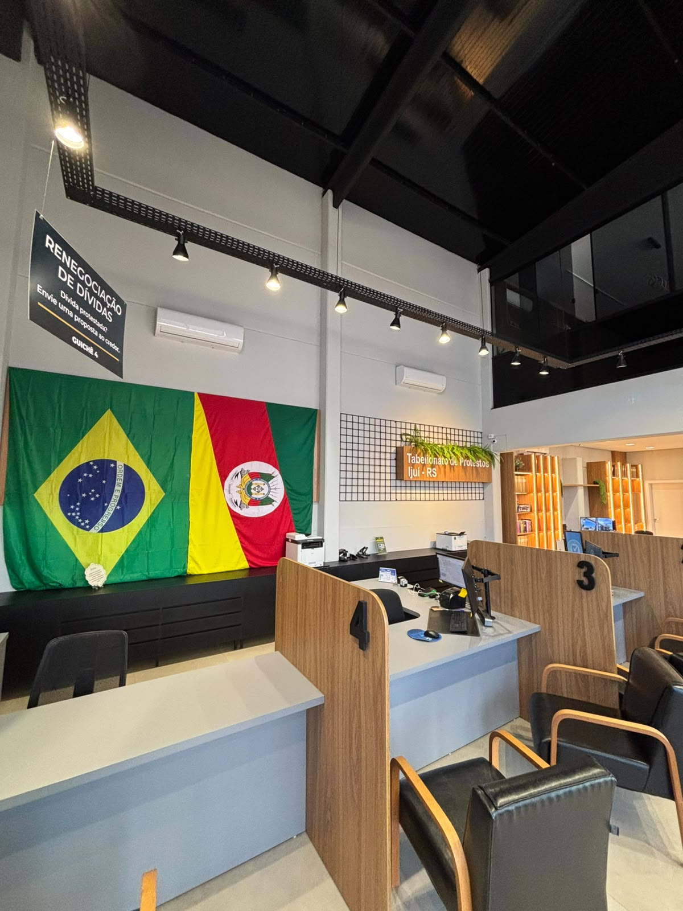
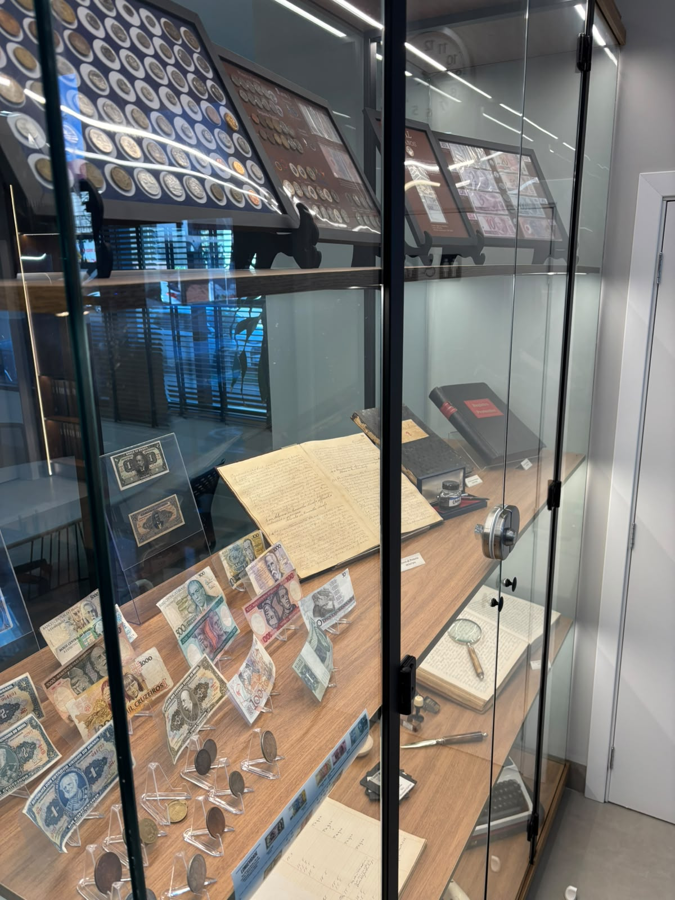
Onde estamos
Horário e Localização
CEP 98700‑145 · ver no Google Maps
Segurança
Canais Oficiais de Comunicação
Para a sua segurança, veja como identificar um contato verdadeiro do Tabelionato de Protestos de Ijuí e evite cair em golpes.
Orientações para não cair em golpes
- Confirme sempre pelo número oficial (55) 3332-7720 antes de qualquer pagamento ou envio de dados.
- Desconfie de mensagens vindas de outros números, mesmo que usem nosso nome, logo ou fotos.
- Não clique em links enviados por perfis não oficiais, nem baixe arquivos de contatos desconhecidos.
- Consultas, certidões e anuências são feitas apenas pelo portal oficial indicado neste site ou presencialmente em nosso balcão.
- Na dúvida, ligue para o número oficial ou compareça pessoalmente na Rua 19 de Outubro, 127 — Centro.
Termos de Uso do Tabelionato
Este site tem caráter informativo sobre os serviços do Tabelionato de Protestos de Ijuí/RS. Os serviços de protesto de títulos, certidões, consulta de protestos e anuência eletrônica são realizados exclusivamente pelos canais oficiais aqui indicados: nosso balcão físico, o telefone/WhatsApp (55) 3332-7720 e o portal pesquisaprotesto.com.br.
Este site não realiza cobranças, não processa pagamentos e não solicita dados sensíveis (como senhas ou dados bancários) diretamente por meio de suas páginas. O uso dos serviços de terceiros vinculados, como o portal de pesquisa de protestos, segue os termos e a política de privacidade do respectivo provedor.
Buscamos manter as informações deste site atualizadas e corretas, mas recomendamos sempre confirmar prazos, valores e procedimentos diretamente com o Tabelionato pelos canais oficiais antes de tomar qualquer decisão.
Em caso de dúvida sobre a autenticidade de um contato recebido em seu nome, procure diretamente nossos canais oficiais antes de fornecer qualquer informação ou realizar qualquer pagamento.
Política de Privacidade e Proteção de Dados (LGPD)
O Tabelionato de Protestos de Ijuí/RS, serventia extrajudicial exercida em caráter de delegação do Poder Público, é responsável pelo tratamento dos dados pessoais relacionados à sua atividade, nos termos da Lei nº 13.709/2018 (LGPD).
No exercício da atividade de protesto de títulos e documentos de dívida, tratamos dados como nome, CPF/CNPJ, endereço e informações do título apresentado, com base no cumprimento de obrigação legal e no exercício regular de direitos previstos na Lei nº 9.492/97 (Lei de Protesto). Esses dados podem ser compartilhados com órgãos públicos, o Poder Judiciário e outras serventias, exclusivamente quando exigido ou autorizado por lei.
Este site, por si só, não possui formulários de coleta de dados nem utiliza cookies de rastreamento. Ao entrar em contato pelo WhatsApp, telefone ou e-mail, os dados que você fornecer (como nome e número de contato) são usados apenas para responder à sua solicitação.
Nos termos do art. 18 da LGPD, você pode solicitar a confirmação da existência de tratamento, acesso, correção, anonimização, portabilidade ou eliminação de dados, além de informações sobre o compartilhamento e a revogação de consentimento, quando aplicável. Para exercer esses direitos ou esclarecer dúvidas, utilize nossos canais oficiais: telefone/WhatsApp (55) 3332-7720 ou presencialmente na Rua 19 de Outubro, 127 — Centro.
Adotamos medidas técnicas e administrativas razoáveis para proteger os dados sob nossa responsabilidade contra acessos não autorizados e situações de uso indevido. Esta política pode ser atualizada periodicamente para refletir mudanças legais ou operacionais, permanecendo sempre disponível nesta página.
Canal Oficial
Como Entramos em Contato
Nosso contato é sempre feito pelo WhatsApp oficial, verificado pela Meta, ou por ligação — nunca por outros números ou perfis.
Nosso WhatsApp é a plataforma oficial, verificada pela Meta. Por isso, pode ser necessário que você responda à nossa mensagem para que possamos continuar o atendimento — essa é uma regra do próprio WhatsApp, não uma cobrança da nossa parte.
Compromisso Sustentável
Objetivos de Desenvolvimento Sustentável
Apoiamos os Objetivos de Desenvolvimento Sustentável da ONU, alinhando nossa atuação institucional a práticas mais responsáveis e sustentáveis.
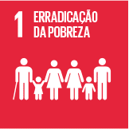
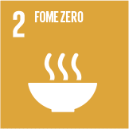
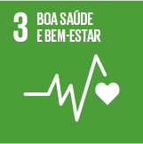
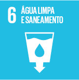
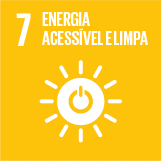
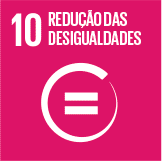
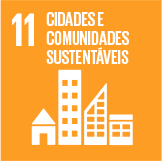
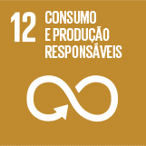
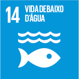
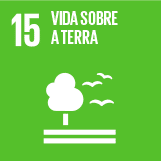
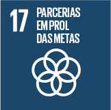
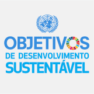